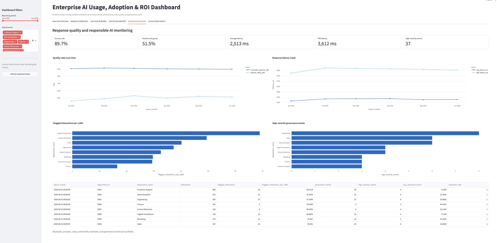
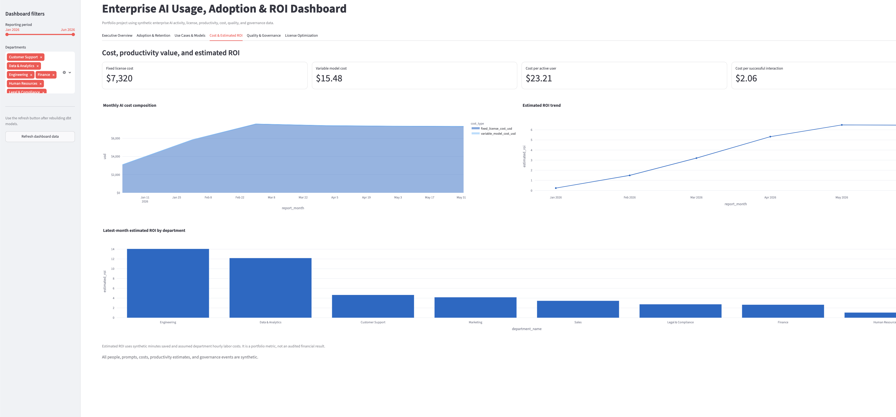
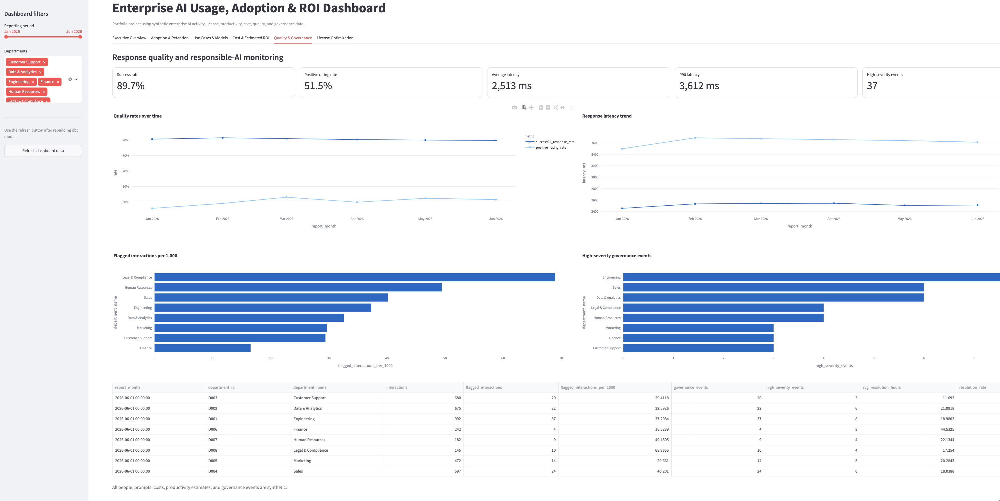

Analytics engineering · Generative AI · Business intelligence
Enterprise AI Usage, Adoption & ROI Analytics Platform
An end-to-end measurement platform for understanding whether licensed employees adopt generative AI, which use cases create value, what the program costs, and where quality, governance, or license-utilization issues need attention.
The business problem
Prompt counts alone do not tell leaders whether an AI investment is useful, efficient, or safe. The measurement layer must connect employee and license context with usage, token cost, response quality, productivity signals, and responsible-AI events.
Latest synthetic-data snapshot
Architecture and modeling
Python creates deterministic synthetic data for employees, departments, licenses, sessions, interactions, model prices, surveys, and governance events. PostgreSQL stores the raw layer, and dbt transforms the data into staging, intermediate, dimensional, fact, and reporting-mart layers.
| Layer | Purpose |
|---|---|
| Raw | Source-shaped records, keys, repeatable loading, and reconciliation. |
| Staging | Consistent names, data types, booleans, dates, and cleanup. |
| Intermediate | Reusable cost, session, license-month, and user-month logic. |
| Dimensions and facts | Clear grains for users, dates, models, departments, sessions, interactions, surveys, and events. |
| Marts | Executive, department, adoption, use-case, license, and governance outputs. |
Data quality and controls
- Primary-key, non-null, accepted-value, range, and relationship tests.
- Session-to-interaction count reconciliation.
- Interaction timestamps checked against session boundaries.
- Governance events connected to policy or sensitivity flags.
- Unique user-month and department-month reporting grains.
- Estimated ROI calculation reconciliation.
A custom dbt test caught one interaction timestamp eight seconds beyond its session end. I corrected the raw record and generator while keeping the test.
Dashboard
The dashboard includes Executive Overview, Adoption & Retention, Use Cases & Models, Cost & Estimated ROI, Quality & Governance, and License Optimization.

Executive view of adoption, activity, cost, productivity value, and department performance.

Fixed and variable cost, estimated productivity value, and department ROI.

Response quality, latency, policy risk, and governance monitoring.
Initial findings
- Adoption increased by 56.3 percentage points from January to June.
- Engineering reached 100% latest-month adoption.
- Human Resources had the lowest latest-month adoption at 84.6%.
- Engineering produced the highest estimated monthly productivity value at $19,936.92.
- Inactive fixed-seat licenses represented about $510 per month in potential reallocation.
Production improvements
- Integrate platform audit logs, HR, Finance, identity, and license sources.
- Add slowly changing employee and department history.
- Apply access controls, retention rules, and prompt-content minimization.
- Validate productivity using workflow outcomes and controlled experiments.
- Add orchestration, freshness monitoring, alerts, and cloud deployment.
Confidentiality
All employee, prompt, pricing, survey, cost, and governance records are synthetic. No confidential employer data, credentials, or real employee monitoring data is included.